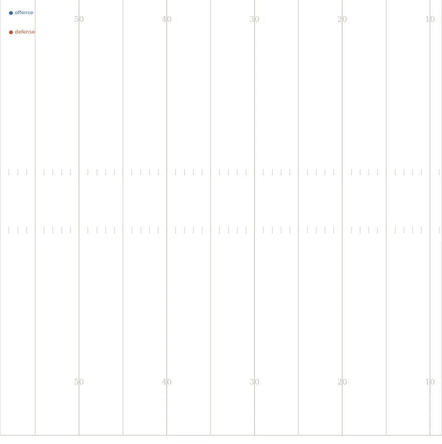
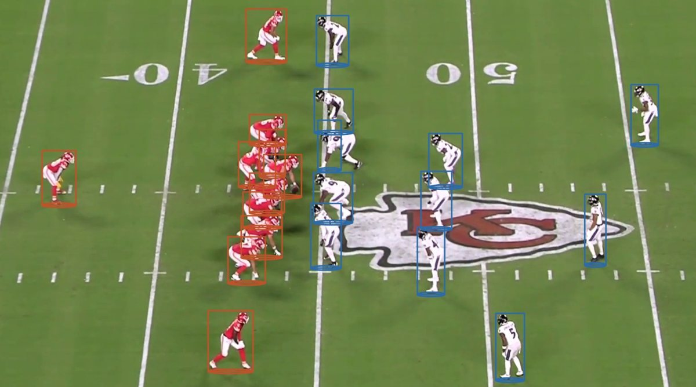

NFLVision
From football video to player-tracking data in yards: every player detected, followed and placed on the field, frame by frame.

The problem
Player-tracking data is the raw material of modern football analytics, but it only exists for the games and seasons someone has chosen to release. Video exists for everything. NFLVision asks how close you can get to tracking data starting from video alone.
How it works
- Videobroadcast-style game footage
- Shotscut the game into plays; camera angle from yard-line geometry
- DetectionRF-DETR fine-tuned on football frames
- Fieldyard lines + hash marks + yard-number OCR → homography per frame
- Trackingtracks in yards, team by jersey colour
- Play contextsnap time, line of scrimmage, player roles
Training and validation
The detector and the role classifier were trained with player-tracking data from real games and checked against the video of the same games, frame by frame. Once trained, the pipeline needs only video, so it can be pointed at public footage.
Every component has its own measurement: detection, field registration, tracking, team assignment, snap time and roles are scored separately, so a gain in one stage cannot hide a loss in another.
Selected results
- Field registration tracked through the whole play in 100% of plays; 0.7–1.0 yd error up to 6 s after the snap.
- Team by jersey colour: 97.2% correct.
- Tracking: 91.3% of player-frames covered; speed error 0.22 yd/s; direction error 5.4°.
- Roles at the snap (QB, OL, WR, TE, RB, DL, LB, CB, S): 85.6% correct after fine-tuning the detector.
- Clip → play matching using yard numbers read from the field and the line of scrimmage: 97.4%.
What is next
Route classification (hitch, out, go, post…) on top of the tracks, then coverage and pass-rush features. Everything above is measured on one full game; the next step is a second game in a different stadium.
